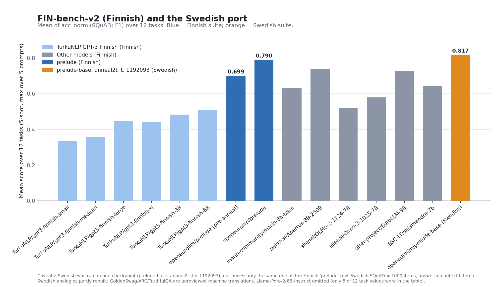
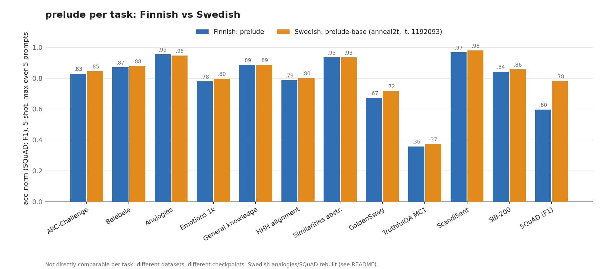

SV-bench-v2
A Swedish port of FIN-bench-v2 (Kytöniemi et al., TurkuNLP): 12 tasks, five hand-written prompt variants each, run with the LM Evaluation Harness. Unofficial community port, not affiliated with TurkuNLP.
Code, data and configs on GitHub
Finnish chart with the Swedish result
Bars are the mean of the 12 per-task scores (acc_norm, F1 for SQuAD; max over the five prompts per task, as in the Finnish table). Finnish numbers are from the FIN-bench-v2 authors' table.

Per task: Finnish vs Swedish prelude

Not a like-for-like comparison per task: different datasets, possibly different checkpoints, Swedish analogies were partly rebuilt (Finnish case-ending items have no Swedish equivalent), Swedish SQuAD is filtered to answers found in the context, and GoldenSwag, ARC and TruthfulQA are unreviewed machine translations.
Swedish results
Model: openeurollm/prelude-base @ anneal2t_multilingual1_dominant1_iter_1192093. 5-shot. Max is the reported score (max over prompts); the last numeric column lists the five prompt variants p0–p4.
| Task | Max | Mean | p0 p1 p2 p3 p4 | Source | Caveat |
|---|---|---|---|---|---|
| ARC-Challenge | 0.846 | 0.812 | 0.83 0.71 0.84 0.85 0.83 | occiglot/arcX (sv) | machine-translated, unreviewed |
| Belebele | 0.879 | 0.860 | 0.88 0.88 0.87 0.87 0.80 | facebook/belebele swe_Latn | human translation |
| Analogies | 0.946 | 0.909 | 0.91 0.84 0.92 0.95 0.93 | FIN-bench v1, translated from Finnish | idx 40-129 rebuilt for Swedish; not comparable |
| Emotions 1k | 0.797 | 0.760 | 0.73 0.79 0.77 0.80 0.71 | FIN-bench v1 (XED), translated from Finnish | LLM translation, unreviewed |
| General knowledge | 0.886 | 0.874 | 0.87 0.87 0.89 0.87 0.87 | FIN-bench v1, translated from Finnish | a few Finland-specific facts |
| HHH alignment | 0.801 | 0.771 | 0.75 0.80 0.77 0.78 0.75 | FIN-bench v1, translated from Finnish | some items adapted |
| Similarities abstraction | 0.934 | 0.924 | 0.93 0.91 0.93 0.91 0.93 | FIN-bench v1, translated from Finnish | two distractors adapted |
| GoldenSwag | 0.718 | 0.717 | 0.71 0.72 0.72 0.72 0.72 | LumiOpen/opengpt-x_goldenswagx (SV) | machine-translated, unreviewed |
| TruthfulQA MC1 | 0.373 | 0.363 | 0.36 0.36 0.36 0.37 0.35 | LumiOpen/opengpt-x_truthfulqax (mc_SV) | machine-translated |
| ScandiSent | 0.980 | 0.977 | 0.98 0.98 0.97 0.98 0.97 | ScandiSent sv, 2048-item test subset | native Swedish reviews |
| SIB-200 | 0.858 | 0.782 | 0.80 0.63 0.86 0.84 0.79 | Davlan/sib200 swe_Latn | human translation |
| SQuAD (F1) | 0.781 | 0.772 | 0.77 0.77 0.77 0.78 0.77 | SQuAD v2 Swedish (Google Translate) | 1000 items, answer-in-context filtered |
| Mean over tasks | 0.817 |
Prompt choice matters: SIB-200 ranges 0.63–0.86 and ARC 0.71–0.85 across prompt variants, which taking the max hides.
Run it
git clone https://github.com/BirgerMoell/svbench-v2 && cd svbench-v2
pip install lm_eval
python build_scandisent_sv.py && python build_squad_sv.py # builds local data/
lm_eval --model hf --model_args pretrained=<model> --include_path tasks \
--tasks arc_challenge_sv_mcf_svbv2,belebele_swe_Latn_mcf_svbv2,finbench_analogies_sv_mcf_svbv2,finbench_emotions_1k_sv_mcf_svbv2,finbench_general_knowledge_sv_mcf_svbv2,finbench_hhh_alignment_sv_mcf_svbv2,finbench_similarities_abstraction_sv_mcf_svbv2,goldenswag_mt_sv_cf_svbv2,ogx_truthfulqax_mc1_sv_svbv2,scandisent_sv_mcf_svbv2,sib200_sv_mcf_svbv2,squad_sv_gen_svbv2 \
--num_fewshot 5 --output_path results/
python aggregate.py results/*/results.jsonKnown limitations
- Only one model has been evaluated so far.
- All 35 Swedish prompts and the translations of the five FIN-bench v1 tasks were written by an LLM (Claude), translated from the Finnish data, and need native-speaker review.
- Analogies items 40–129 test Finnish morphology; they were rebuilt with Swedish forms, so that task is a new Swedish task, not a translation.
- Translators' notes are in
translation/out/.
Code and prompts: Apache-2.0. See the README for data licenses and provenance.